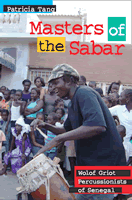

<body bgcolor="#FFFFFF" text="#000000" link="#0000FF" vlink="#CC0000" alink="#CC0000"><center><hr width="350" size="1" align="center" noshade>A fascinating study of Senegalese masters of the sabar drum<hr width="350" size="1" align="center" noshade><p><a href="https://cdcshoppingcart.uchicago.edu/Cart/ChicagoBook.aspx?ISBN=9781592134199&&PRESS=temple" target="_top">Buy this book!</a> | <a href="https://cdcshoppingcart.uchicago.edu/Cart/Cart.aspx?PRESS=temple" target="_top">View Cart</a> | <a href="https://cdcshoppingcart.uchicago.edu/Cart/Cart.aspx?PRESS=temple" target="_top">Check Out</a></p><p></p></center><!--none//--><h1>Masters of the Sabar</h1>
<H2>Wolof Griot Percussionists of Senegal</H2>
<H2>Includes CD</H2>
<h3>Patricia Tang</h3>
<P>cloth 1-59213-419-X $90.50, Dec 06, <FONT COLOR=#990033>Available</FONT>
<br>paper 1-59213-420-3 $34.95, Dec 06, <FONT COLOR=#990033>Available</FONT>
<br>Electronic Book 1-59213-421-1 $34.95 <FONT COLOR=#990033>Available</FONT>
<BR> 224 pp
6x9
2&nbsp;map(s) 22&nbsp;figures 15&nbsp;halftones
</P><p><i>Masters of the Sabar</i> is the first book to examine the music and culture of Wolof griot percussionists, masters of the vibrant sabar drumming tradition. Based on extensive field research in Senegal, this book is a biographical study of several generations of percussionists in a Wolof griot (<i>géwël</i>) family, exploring and documenting their learning processes, repertories, and performance contexts&#151;from life-cycle ceremonies to sporting events and political meetings. Patricia Tang examines the rich history and changing repertories of sabar drumming, including dance rhythms and <i>bàkks</i>, musical phrases derived from spoken words. She notes the recent shift towards creating new <i>bàkks</i> which are rhythmically more complex and highlight the virtuosity and musical skill of the percussionist. She also considers the burgeoning popular music genre called <i>mbalax</i>.
<p>The compact disc that accompanies the book includes examples of the standard sabar repertory, as well as <i>bàkks</i> composed and performed by Lamine Touré and his family drum troupe.
<BR>&nbsp;<h2>Reviews</h2>
<p><i>“Tang adds a unique perspective by highlighting the role of the sabar drum among Wolof griots….She provides a thorough analysis of the standard rhythms…The accompanying CD is a wonderful resource.”</i>
<br>&#151;<b><i>Choice</i></b>
<p><i>“This excellent publication…[is] a well-written account [of] the music and culture of Wolof Griot percussionists…an important addition to the literature.”
</i><br>&#151;<b><i>Multicultural Review</i></b>
<p><i>“Tang’s ethnography is lucid and engaging… [Her] study is particularly significant for examining the performance of sabar beyond its indigenous social and aesthetic frames…. </i>Masters of the Sabar<i> represents a significant contribution in this direction.”</i>
<br>&#151;<b><i>African Studies Review</i></b>
<p><i>"[A]n important contribution to scholarship of West African music cultures and the hereditary caste system into which griots are born. Tang’s integration of oral history sources with other contemporary and historic sources, as well as her care in transcription and translation, sets a high standard for the presentation of research findings. Her autoethnographic introduction will surely assume an important place in research methodology courses."</i>
<br>&#151;<b><i>The Oral History Review</i></b>
<BR>&nbsp;<h2>Contents</h2><P>
<p>List of Figures
<br>List of Musical Transcriptions
<br>Contents of accompanying audio Compact Disc
<br>Guide to Pronunciation and Orthography
<br>Acknowledgements
<br>Introduction
<br>1. <i>You will be griot in another way</i>
<br>&nbsp; &nbsp; &nbsp;The Ethnomusicologist's Story
<br>2. <i>There once was a king called Maysa Waaly Jon</i>
<br>&nbsp; &nbsp; &nbsp;Sabar History, Instruments, Ensemble, and Sound
<br>3. <i>The griot lineage, we are one</i>
<br>&nbsp; &nbsp; &nbsp;Wolof Caste and Identity
<br>4. <i>My foreparents used to beat the drums</i>
<br>&nbsp; &nbsp; &nbsp;Wolof Family, Kinship, and Musical Genealogy
<br>5. <i>If a snake bites you, you will think of death</i>
<br>&nbsp; &nbsp; &nbsp;Sabar Repertories
<br>6. <i>Dancing fish and rice</i>
<br>&nbsp; &nbsp; &nbsp;Performance Contexts
<br>7. <i>The 'pax' you play is so sweet</i>
<br>&nbsp; &nbsp; &nbsp;The Role of Sabar in <i>mbalax</i>
<br>Conclusion
<br>Glossary of Terms
<br>Bibliography
<br>Discography
<br>Interviews
</P><BR>&nbsp;<H2>About the Author(s)</H2>
<P><b>Patricia Tang</b> is Associate Professor of Music at the Massachusetts Institute of Technology. She is a scholar and performer of Senegalese music.</P>
<BR><H2>Subject Categories</H2>
<p><A HREF="/tempress/music.html" TARGET="_top">Music and Dance</a>
<BR><A HREF="/tempress/anthropology.html" TARGET="_top">Anthropology</a>
<BR><A HREF="/tempress/cultural.html" TARGET="_top">Cultural Studies</a>
</p>
<BR><h2 class="inpageheading">In the series</H2>
<P><I><a href="http://www.temple.edu/tempress/african_soundscapes.html" onMouseOver="window.status='Click for other books in this series!'; return true;" onMouseOut="window.status=''; return true;" target="_top">African Soundscapes</a></i>, edited by Gregory Barz.
</p><p>African music has been a topic of considerable scholarly and general interest. The books in this new interdisciplinary series will highlight contemporary African music in its cultural contexts and the contributions of African expressive culture to global music traditions. The series will include works by scholars based in Africa.</p>
<p align="center"><a href="https://cdcshoppingcart.uchicago.edu/Cart/ChicagoBook.aspx?ISBN=9781592134199&&PRESS=temple" target="_top">Buy this book!</a> | <a href="https://cdcshoppingcart.uchicago.edu/Cart/Cart.aspx?PRESS=temple" target="_top">View Cart</a> | <a href="https://cdcshoppingcart.uchicago.edu/Cart/Cart.aspx?PRESS=temple" target="_top">Check Out</a></p><p><font face="Arial" size="1"><a href="copyright.html" onMouseOver="window.status='Web Copyright Policy';return true;" onMouseOut="window.status=''" title="Web Copyright Policy">&copy;</a> 2015 <a href="http://www.temple.edu" target="new" onMouseOver="window.status='Link to Temple University home page';return true;" onMouseOut="window.status=''" title="Link to Temple University home page">Temple University</a>. All Rights Reserved. http://www.temple.edu/tempress/titles/1816_reg.html</font></p>